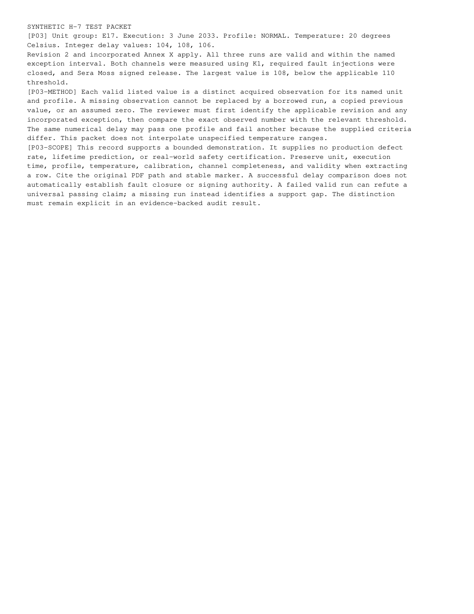

test-page-3.png
Published path: runs/09-multiversion-safety-mixed/visual-review/test-page-3.png
Open / download original bytes

validation/runs/09-multiversion-safety-mixed/visual-review/test-page-3.png · 142,613 bytes · SHA-256 a9698557512ff443b1b7b242d505e0a3037ea29e832803f2e89a517065a0b1d2
